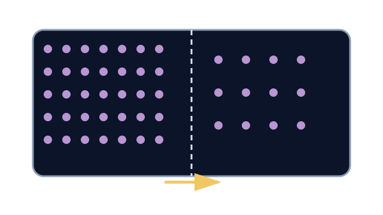

LAUNCH Science · W4L1 · lesson resources
Count both directions
Choose one shared task or resource within the current lesson stage. Keep the lesson’s 40-minute timetable and 15-minute independent work.
We Do · Count both directions
Equal volumes: 12 particles on the left, 3 on the right. Predict the initial net direction.
| Interval | Left → right | Right → left |
|---|---|---|
| Early | 8 | 2 |
| At balance | 5 | 5 |
Find the net crossing count for each interval. What keeps happening at balance?
Discuss, point, write or dictate your first reason. Use one example first; extend only if there is time.
Reveal shared reasoning after an attempt
Early: 8 − 2 = 6 net left to right.
At balance: 5 − 5 = 0 net.
Particles still move randomly and cross both ways. These are illustrative model counts.
This page keeps your writing while it stays open. It does not save or send it.
Model explanation and diagram

Particles move randomly in both directions. Net movement is the difference between those two movements, not a rule obeyed by every particle.
Watch for: Passive means no energy supplied by respiration is needed. It does not mean particles have no kinetic energy.
Give a smaller support cue
Net movement = crossings one way minus crossings the other way. Start: “More particles move from ___ to ___ because…”
Optional video · Diffusion
Watch for: What keeps happening when there is no net movement?
Use a short relevant extract within I Do, then pause for an explanation. The clip replaces part of the modelling time.
Open the freesciencelessons video in a new tab
No-video version · use the same question
Particles continue to move randomly and cross in both directions. At equilibrium the crossings balance, so there is no net movement.
Internet is needed for the optional clip. It is concept teaching; viewing it is not completion of a practical.